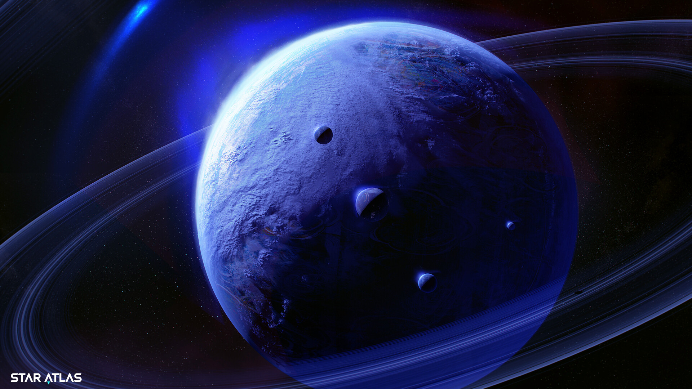
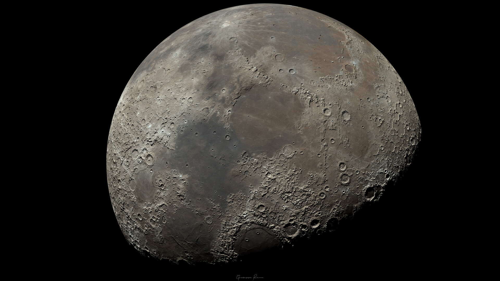

Planeta com cauda? ü§î
Sabia que Mercúrio tem uma cauda parecida com a de um cometa?
Os ventos solares empurram √°tomos de s√≥dio de sua superf√≠cie, criando essa cauda. Para v√™-la, √© preciso uma foto de longa exposi√ß√£o com telesc√≥pio e filtro especial. üì∏üî≠

An√©is de Saturno v√£o desaparecer? üò±
Saturno, um gigante gasoso com 4 mil milh√µes de anos, n√£o √© o único planeta com an√©is - mas tem os mais espetaculares e complexos, segundo a NASA.ü™ê

Cemit√©rio na Lua? üò¶
Eugene Shoemaker, o descobridor do cometa Shoemaker-Levy 9, foi um pioneiro da astrogeologia e treinou astronautas para as missões Apollo.
Apesar de nunca ter ido à Lua devido a problemas de saúde, suas cinzas foram levadas para lá pela NASA, tornando-o o único ser humano enterrado na Lua.